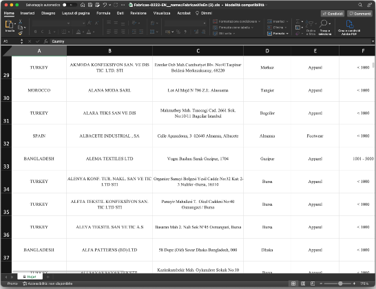

01
WHAT Found in Fast Fashion Factories
WHAT Found in Fast Fashion Factories
collects 6388 photos posted on Google Maps with the addresses of 1000 garment factories around the world.
All the addresses were found in
the list of level 1 (tier 1) suppliers that
have produced for MANGO in 2021.
All the addresses were found in
the list of level 1 (tier 1) suppliers that
have produced for MANGO in 2021.
Silvia, rimembri ancora Quel tempo della tua vita mortale, Quando beltà splendea Negli occhi tuoi ridenti e fuggitivi, E tu, lieta e pensosa, il limitare 5 Di gioventù salivi?

Silvia, rimembri ancora Quel tempo della tua vita mortale, Quando beltà splendea Negli occhi tuoi ridenti e fuggitivi, E tu, lieta e pensosa, il limitare 5 Di gioventù salivi?
Silvia, rimembri ancora Quel tempo della tua vita mortale, Quando beltà splendea Negli occhi tuoi ridenti e fuggitivi, E tu, lieta e pensosa, il limitare 5 Di gioventù salivi?
04
WHO Found in Fast Fashion Factories
WHO Found in Fast Fashion Factories
is a website developed during for the DensityDesign Lab Final Synthesis Studio of the Master in Communication Design
at Politecnico di Milano.
at Politecnico di Milano.
Giovanni Bonassi
Martina Bracchi
Cecilia Buonocunto
Silvia Casavola
Kateryna Lapshyna
Vlada Ershiva
Matteo Visini
Martina Bracchi
Cecilia Buonocunto
Silvia Casavola
Kateryna Lapshyna
Vlada Ershiva
Matteo Visini
PROFESSORS
Michele Mauri
Simone Vantini
Gabriele Colombo
Angeles Briones
Salvatore Zingale
Michele Mauri
Simone Vantini
Gabriele Colombo
Angeles Briones
Salvatore Zingale
ASSISTANTS
Tommaso Elli
Andrea Benedetti
Elena Aversa
Arianna Bellantuono
Alessandra Facchin
Tommaso Elli
Andrea Benedetti
Elena Aversa
Arianna Bellantuono
Alessandra Facchin
Politecnico di Milano
Communication Design MSc
Final Synthesis Design Studio
sect. C3
DensityDesign Lab
18th Edition
A.Y. 2022/23
Communication Design MSc
Final Synthesis Design Studio
sect. C3
DensityDesign Lab
18th Edition
A.Y. 2022/23